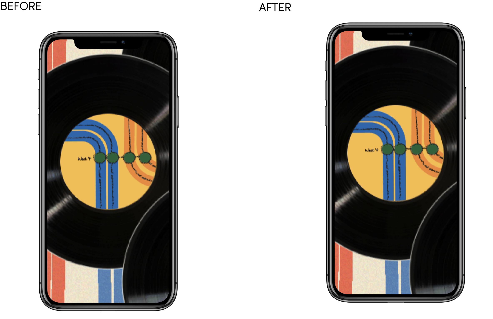

DESIGN PROCESS
In this independent project, I define the look and feel of the AR music experience by combining the visualization of New York subway map and its busking music together. Based on a standard design process, I designed and developed an Augmented Reality Installation though brainstorming, researching, wireframing, prototyping, user testing and feedback iterations.
IDEATION
In the traditional museum experience, audiences can only interpret the installation through a short description, or they can only look at the artwork from a distance without any interactions. However, in my project, I want to create an innovative experience, where the audience can interact with the installation. The main purpose of my project is to offer audiences a better museum experience and the big challenge of the project is how to design the interaction between the installation and its audience
SKETCHES
In the traditional museum experience, audiences can only interpret the installation through a short description, or they can only look at the artwork from a distance without any interactions. However, in my project, I want to create an innovative experience, where the audience can interact with the installation. The main purpose of my project is to offer audiences a better museum experience and the big challenge of the project is how to design the interaction between the installation and its audience

Each record represents one station. In the installation, there are 8 records which stand for stations (for top to down): 59 Lexington Ave, 59 Street Columbia Circle, 42nd Street Grand Central, 42nd Street Times Square, 14 Street Union Square, West 4, Canal Street and Metropolitan Ave. These stations which can transit to other trains, are large, complicatedly structuralize and have lots of flowing population. And the subway performers are more likely to perform in these stations. The graphic pattern works as a musical notation which are the images for the code to recognize. The lines, dots and color are the same style as the background design. The sketchy lines, dots and hand-writing station name is the supportive elements for setting up the Augmented Reality, which I detailly discuss on below.
PROTOTYPE
After designing the visual elements, I printed the graphic on a 25" by 25" white foam and attached eight vintage vinyl records on top. The code, which is written with C#, works along with Unity and its augmented reality plugin Vuforia. When people open the App and scan the vinyl records, the iPhone plays the music automatedly.

USER TESTING

Based on the user testing, I gained some useful feedback:
• When the phone lost the target, the music is still on until the image tracker detects a new target, so that the audiences' won't hold up their arms a long time.
• Add instruction showing how the installation works.
• Add music visualization to the phone interface.
ITERATION
Rethink the user interface when music is on.
Version 1 of Music Under New York only shows the symbol when the music is on while the Version 2 of Music Under New York shows the music visualizer after the phone decode the image above vinyl record, which make audiences more engaging to the installation and obtain more fun experience during enjoying the installation.